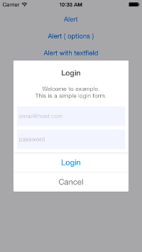
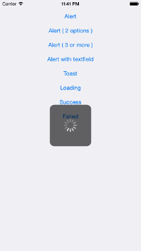
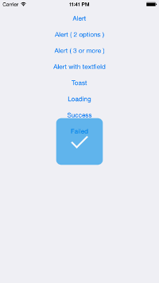

PKNotification
Simple and customizable notifications (Toast, Progress, Loading and Alert) in Swift.
- Welcome to PKNotification Pages- How to use
-- Simple Alert
-- Optional Alert
-- Alert with TextField
-- Toast
-- Progress
Welcome to PKNotification Pages.
Simple and customizable notification functions in Swift.Target: iOS7 orater
Feel free to send me your feedback and PR.
How to use
1. Add PKNotification/PKNotification.swift into your project.2. There is a global variable named PKNotification.
　Use the variable and call methodsike so
Simple Alert

PKNotification.alert(
title: "Success !!",
message: "Foooooooooooooo\nDisplay this default style pop up view.\nBaaaaaar",
items: nil,
cancelButtonTitle: "O K",
tintColor: nil)
PKNotification.alertWidth //CGFloat
PKNotification.alertMargin //CGFloat
PKNotification.alertTitleFontColor //UIColor
PKNotification.alertTitleFontStyle //UIFont
PKNotification.alertMessageFontColor //UIColor
PKNotification.alertMEssageFontStyle //UIFont
PKNotification.alertButtonFontColor //UIColor
PKNotification.alertBackgroundColor //UIColor
PKNotification.alertCornerRadius //CGFloat
Optional Alert

Create Button
let foo:PKButton = PKButton(title: "Foo",
action: { (messageLabel, items) -> Bool in
NSLog("Foo is clicked.")
return true
},
fontColor: UIColor(red: 0, green: 0.55, blue: 0.9, alpha: 1.0),
backgroundColor: nil)
PKNotification.alert(
title: "Notice",
message: "Foooooooooooooo\nDisplay this default style pop up view.\nBaaaaaar",
items: [foo],
cancelButtonTitle: "Cancel",
tintColor: nil)
Alert with TextField
init textfields as usual
let email:UITextField = UITextField()
email.placeholder = "email@host.com"
let passwd:UITextField = UITextField()
passwd.placeholder = "password"
let foo:PKButton = PKButton(title: "Login",
action: { (messageLabel, items) -> Bool in
let tmpEmail: UITextField = items[0] as UITextField //items index number
let tmpPassed: UITextField = items[1] as UITextField //items index number
if (tmpEmail.text == "" || tmpPassed.text == ""){
messageLabel?.text = "sorry, please check email and pass again."
return false
}
return true
},
fontColor: UIColor(red: 0, green: 0.55, blue: 0.9, alpha: 1.0),
backgroundColor: nil)
PKNotification.alert(
title: "Login",
message: "Welcome to example.\nThis is a simple login form.",
items: [email, passwd, foo],
cancelButtonTitle: "Cancel",
tintColor: nil)
Toast

PKNotification.toast("hogehogehogehoge")
PKNotification.toastMargin //CGFloat
PKNotification.toastHeight //CGFloat
PKNotification.toastAlpha //CGFloat
PKNotification.toastRadious //CGFloat
PKNotification.toastBackgroundColor //UIColor
PKNotification.toastFontColor //UIColor
PKNotification.toastFontStyle //UIFont
Progress
 
PKNotification.loading(true) // show loading view.
PKNotification.loading(false) // hide loading view.
PKNotification.success(nil) // show default success image.
PKNotification.failed("Foo") // show default failed image with message.
PKNotification.loadingBackgroundColor //UIColor
PKNotification.loadingActiveIndicatorStyle //UIActivityIndicatorViewStyle
PKNotification.successBackgroundColor //UIColor
PKNotification.successImage //UIImage *if it's nil, set default image automatically
PKNotification.failedBackgroundColor //UIColor
PKNotification.failedImage //UIImage *if it's nil, set default image automatically